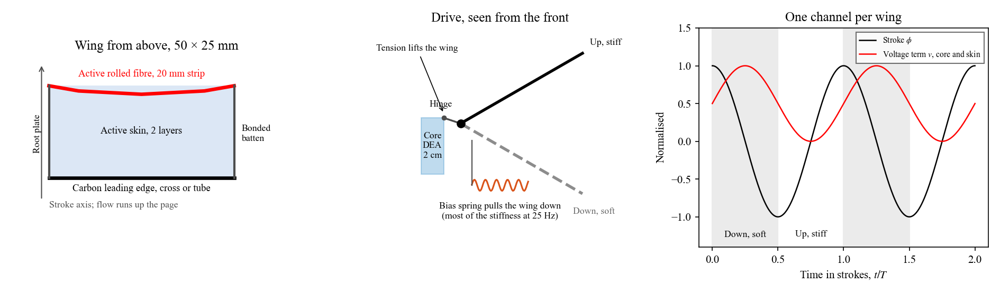
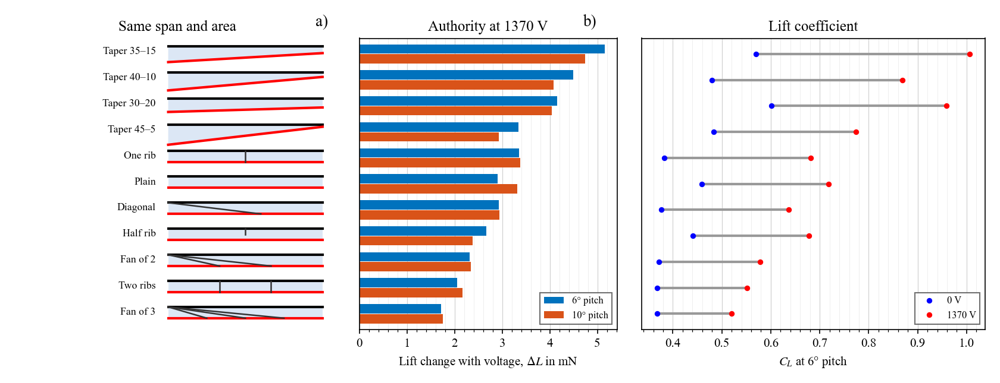
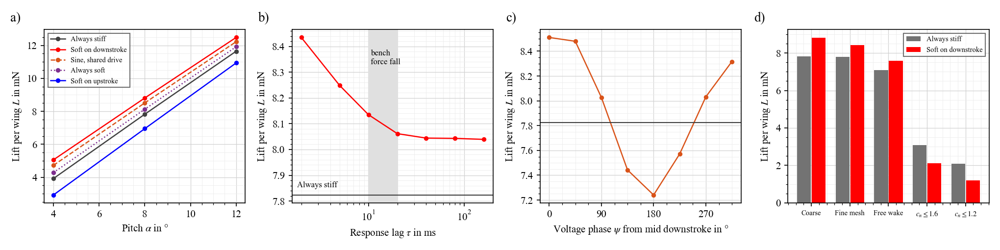
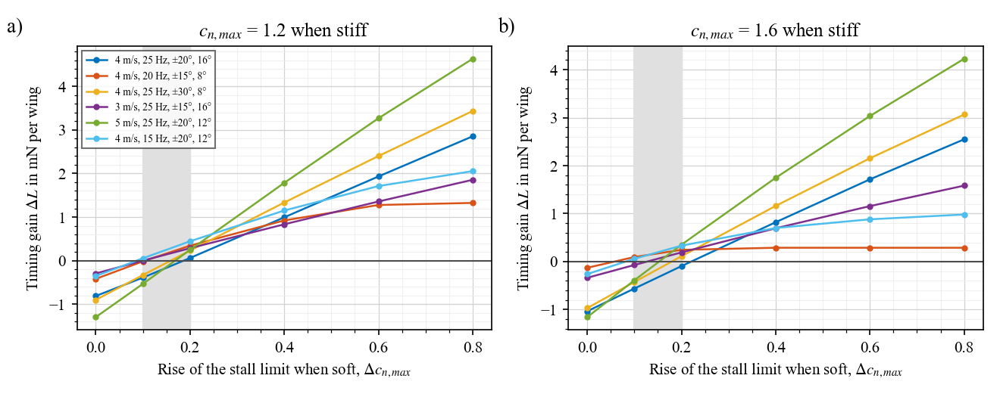
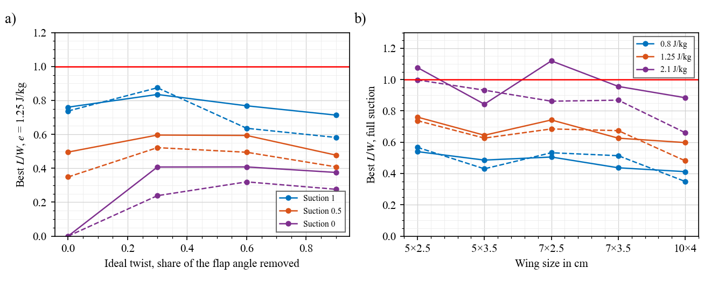
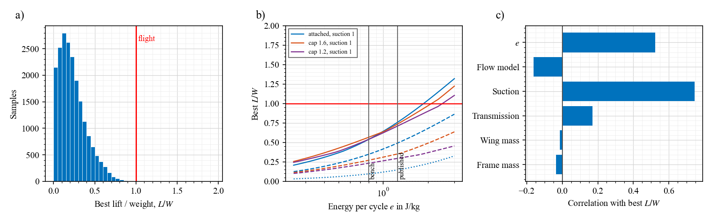
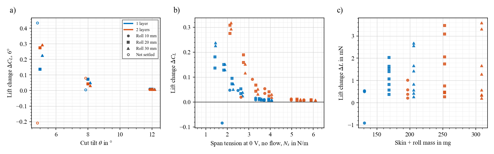
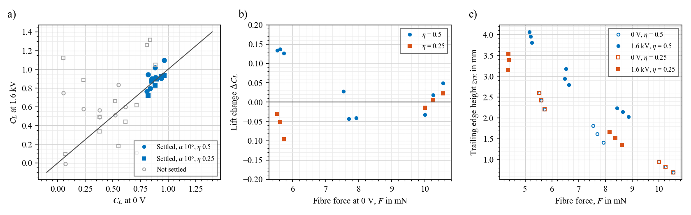
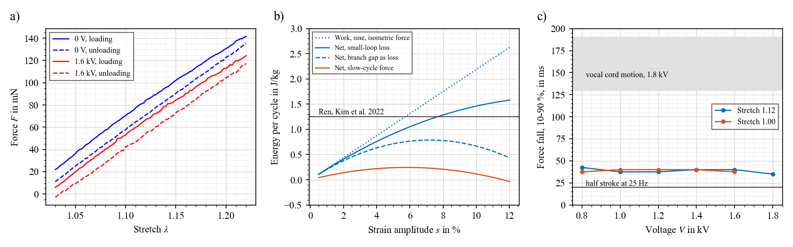
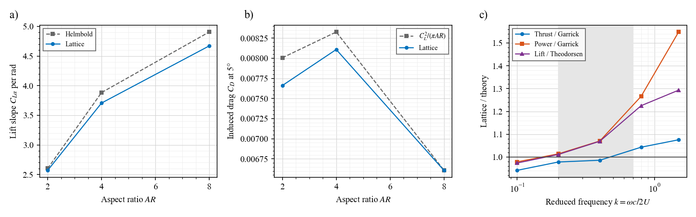

Two big rolled DEAs, each flapping a 5 cm wing whose whole skin is also a DEA, with an active rolled trailing edge and a carbon leading edge. Can it fly forward, and does stiffening the skin on the upstroke help?
Nothing here is built or measured on this robot. Every number is a model prediction unless marked as bench or published.
The idea
Wing: 5 cm span, skin of active DEA film, active rolled fibre along the trailing edge, carbon strip or cross along the leading edge.
Drive: one rolled DEA of about 2 cm per wing, through a transmission to the leading edge. The trailing-edge fibre pulls to the body.
Flight: forward flight, about 4 m/s.
Timing: skin stiffer on the upstroke than on the downstroke. Voltage lowers tension, so that means voltage on in the downstroke.
Verdict
Question
Answer from the models
Tethered wing and core, in a wind tunnel
Feasible on paper, and worth building as a test
Free flight, as specified
Does not close: lift / weight about 0.5–0.75, before any electronics
Stiff upstroke, soft downstroke
Right sign in attached flow, about +8 %. Conditional: see below
Why free flight fails: a DEA gives a fixed energy per cycle, so it is short of power at 25 Hz. It needs about 2 J/kg with full leading-edge suction; the bench gives about 0.8 if the isometric force holds in cycles (far less with the slow-cycle force), and the published value is 1.25. A larger wing does not help, and ideal twist helps by only about 10–15 %.
What the timing needs: (1) a skin response of about 5–10 ms or faster, and (2) a soft skin that raises the stall limit by at least about 0.1–0.2 in section force. Neither is measured.
What would change the verdict: 2 J/kg in a loaded 25 Hz cycle, or lift sustained well beyond these models by a leading-edge vortex.
Limits: nothing is built. The coupled model is checked against steady finite elements and theory, not against flow data. Its trailing-edge rise is about 5× too low, it has no flow separation beyond a force cap, and it fails at low tension.
The design these numbers describe

Part
Choice
Why
Wing
50 × 25 mm, one panel, 2 layers, $H$ 35 µm, cut tilt 5° and 8.85°, $\lambda_n$ 1.06
Steady and responsive in the finite elements
Trailing edge
Rolled 20 mm strip with a 5 mm active band
A stiff edge keeps the skin from simply tilting; 10 mm does not settle
Leading edge
Cross 1.5 × 0.2 mm, 43 mg; or tube 1.0/0.7 mm, 31 mg
A single strip bends 4–14 mm
Batten
Bonded to the leading edge
Hinged: tip swings about ±22 mm, power up by half
Wing mass
About 300 mg
Skin and roll 253 mg
Core
20 mm long, 0.5–1 g, 12–24 layers at 35.5 µm from 55 mm sheets, 5.5–7.8 mm across
About 1 g reaches ±20° with the isometric force
Drive
Lever about 3 mm, bias spring, one channel per wing at 1.6 kV
Skin and core share $v(t)$, with peak voltage at mid downstroke
Attachment
Hinge and fibre anchor on the stroke axis, within about 0.2 mm
1 mm off axis changes the fibre length by about 2 %
Flight point
4 m/s, 25 Hz, ±20°, pitch 12–16°
8–11 mN lift and 18–26 mW air power per wing; thrust about zero, with full suction only
Wing shape and reinforcement
Steady finite elements, 4 m/s, 5 cm span, about 12 cm², 2 layers, 20 mm roll. New work uses $H$ = 30 µm and 1370 V, the same field as 1.6 kV at 35 µm. Veins are rigid lines bonded after tensioning, so they show the most a stiff vein can do.

Equation: same sheet and fibre as above; the tilted cut sets the fibre stretch, $\Delta L_f = c_r \tan\theta_r - c_t \tan\theta_t$, with root and tip chords $c_r$, $c_t$.
Trend, shape: at equal fibre tension, a taper of 35 mm at the root and 15 mm at the tip gives about 1.75× the lift change of the rectangle (5.2 against 2.9 mN at 6°; 5.6 against 3.2 on the finer mesh). It also lifts more at 0 V. The tip batten can shrink to 5 mm or less and the wing still settles, so a separate tip batten is not needed.
Trend, veins: one chord rib costs little (3.4 mN) and shrinks the 0 V bulge from 1.0 to 0.3 mm. More veins cost authority: two ribs 2.1 mN, a fan of three from the root 1.7 mN. Veins add very little mass (a 0.5 × 0.1 mm carbon strip is about 0.08 mg/mm).
Trend, free tip: with no tip edge on a rectangle, with or without diagonals, the wing did not settle in 8 minutes of solving, with bulges up to 4–9 mm. A plain ornithopter wing depends on a slack skin and flow to hold its shape, and steady tension does not give that. This solver cannot say whether it would hold shape while flapping.
Thickness: 30 µm at the same field gives about the same lift change as 35 µm (2.9 against 3.1 mN) and 12 % less wing mass. At 1.6 kV it gives 4.6 mN, at 53 V/µm, if the film survives that.
Limits: steady only. Above a $C_L$ of about 1.2 the attached-flow lift is not believable, so read the 10° taper values with care. No flapping, inertia or stall here. The mesh changes the lift change by about 10 %, with the ranking unchanged.
Validate: cut a rectangle and a 35–15 taper from the same film, and measure lift change on the static panel of test 2.
Family
What holds the skin
Fit with a DEA skin
Yufeng Chen's and other insect wings
Stiff veins carry the load across a thin passive film; a compliant hinge sets pitch at hundreds of Hz
Poor as a copy: a fan of veins takes away most of the authority, and the film here is about 50× heavier per area than a 1.5 µm polyester film
Forward-flying ornithopters such as DelFly
Spar and root stiffeners, slack foil, passive twist. DelFly II work credits outboard stiffeners with about 10 % better thrust per power
Twist is worth having, but a free tip does not settle under steady tension here
Tensioned skin, tapered, no batten, at most one light rib
Root, leading edge and the rolled fibre
Best authority here. Next to test: one rib in flapping
Bumblebee bat
Kitti's hog-nosed bat, Craseonycteris thonglongyai: the published size is close to this robot. No published wing area, wing loading, wingbeat frequency or kinematics were found for this species, so kinematics come from larger bats.
Bumblebee bat (published)
Flittermouse now (model)
Mass
1.7–2.6 g
about 2.8 g with a 1 g core per wing, before electronics
Span
15–17 cm
about 10 cm plus body
Body
29–33 mm long
not designed yet
What it says about size: the bat has about 1.6× the span at about 0.7× the mass. A 7 × 3 cm wing is the right size to copy, but it weighs about 400 mg with 2 layers and a 20 mm roll, or about 240 mg with 1 layer and a 10 mm roll.
Kinematics are next: runs of span folding on the upstroke, tilted stroke plane and twist are below, once checked against the compliant skin.
Does the timing help?
Coupled model, two-layer wing with a 20 mm roll, batten bonded to the leading edge, 25 Hz, ±30°, 4 m/s, $\eta$ 0.5. Voltage lowers tension, so a skin stiff on the upstroke means voltage on during the downstroke.

Equation: $v(t) = \tfrac12(1+\sin(\omega t+\psi))$ for the shared drive, where $\psi = 0$ puts peak voltage at mid downstroke. Tensions follow $v$ through a first-order lag $\tau$.
Trend, timing: soft on the downstroke gives the most lift of the five timings at each pitch shown, and soft on the upstroke gives the least. The gain is +1 mN on the coarse mesh and +0.5 to +0.6 mN (about +8 %) on a finer mesh or with a free wake.
Trend, lag: the gain has mostly gone by $\tau \approx 5$–10 ms. At the bench force-fall time (about 18 ms if that is real) the skin sits at its mean state.
Trend, phase: best within 45° of mid downstroke, which is where a shared sine drive puts it at resonance. So one channel per wing should work.
Warning: this assumes attached flow, though the tip sees about 45° of inflow on the downstroke. With section force capped at $c_n$ 1.2–1.6, lift falls from about 8 to 1–3 mN and the gain changes sign. A fixed cap also leaves camber little way to help, so it largely rules out the gain by construction. Real flow lies somewhere between, perhaps with a leading-edge vortex. Published membrane studies disagree on whether compliance strengthens (Yeh and Chiang 2025) or suppresses (Gehrke and Mulleners 2025) that vortex.
Other: a free batten hinge is rejected: the tip swings about ±22 mm and power rises by half. A spring there, up to 1 mN m/rad, did not bring power down to the bonded value.
Validate: first, a flapping wing on a force sensor with no voltage, compared with these lift numbers. That tells you which lift model holds. Then 0 V, always on, and both sync phases, in randomised order with a sham.
Stall limit and timing
With a fixed cap on section force, camber can hardly help, so the gain goes negative almost by construction. A cambered section may stall later, so here the cap rises with skin softness: $c_{n,max} + \Delta c_{n,max}\, v$.

Trend: break-even at $\Delta c_{n,max}$ of about 0.1–0.25 in all 12 cases. At 0.4 the gain is +0.3 to +1.8 mN per wing (4–63 %, the largest percentages at low baseline lift).
Validate: test 2 below. The steady finite elements give $\Delta C_L$ up to about 0.3 on this design, which is of the right order but is not a stall-limit measurement.
Does it close?
Air power from the coupled model, then the core mass that supplies it, then lift against weight. Two wings at 299 mg, 200 mg frame, 80 % transmission, thrust at least zero, no electronics. Attached flow.
Energy per cycle
Best lift / weight, full suction
Half suction
Bench, 0.8 J/kg
0.54
0.35
Ren, Kim et al. 2022, 1.25 J/kg
0.76
0.49
60 V/µm, about 2.1 J/kg (estimate)
1.08
0.70
Equation: $m_c = P / (e f \eta_{tr})$ per wing, $L/W = 2L / \big[(2m_c + 2m_w + m_f) g\big]$.
Trend: as drawn, it does not support its own weight in level flight unless energy per cycle rises about 2.5× above the bench value and suction is full. The air power is 3× the first-pass estimate, because the first pass assumed twist that this wing does not have.
Caveat: this is not a verdict on tethered tests, which do not need lift to exceed weight. With small strokes and the section force capped, the best values are similar: 0.57, 0.74 and 1.00 for the three energies at full suction, and 0.27, 0.35 and 0.51 at half.

Left: published energy per cycle. Solid attached, dashed force capped at 1.6. Ideal twist removing about 30 % of the flap angle helps by about 10–15 % at full suction, and allows thrust with no suction. More twist does not help further. This twist is prescribed, a requirement rather than a mechanism.
Right: size does not rescue it: air power grows about as fast as lift. Tensions are held the same at these sizes, with no finite-element check.
In one line: required specific power $g U / [(L/D)\,\eta_p]$ is about 39 W/kg at 4 m/s with $L/D \approx 4$ and $\eta_p \approx 0.25$. Available $e f \eta_{tr} (m_c/m)$ is about 12 W/kg at 1.25 J/kg, 25 Hz and a core at half the mass.
What decides it
20,000 draws over the unknowns on the coupled-model map of 5 × 2.5 cm wings: energy per cycle 0.25–1.5 J/kg, transmission 50–90 %, suction 0–100 %, wing 240–330 mg, frame 100–300 mg, and three flow models (attached, or section force capped at 1.6 or 1.2). Each draw takes the best flight condition with thrust at least zero. Code: budget.py.

Equation: $L/W = 2L / \big[(2 m_c + 2 m_w + m_f)\, g\big]$, with $m_c = P / (e f \eta_{tr})$. The core mass grows with air power and falls with energy per cycle.
Trend: median 0.20, 90th percentile 0.46, and no draw reached 1. Leading-edge suction matters most, then energy per cycle. Wing and frame mass hardly matter, because the core dominates.
Drive: with the isometric force, a 1 g core reaches ±20° at 25 Hz and a 500 mg core ±15°. With the slow-cycle force, a 1 g core reaches only ±11°. No slack in these cases.
Limit: the ranges are my judgement and the draws are not probabilities of flight. The model has no sustained leading-edge vortex, which could raise lift above the capped cases.
Validate: flapping force and shaft power on one wing with no voltage gives lift, thrust and effective suction. Measuring a timing gain of 0.5 mN takes about 1,100 paired cycles at 3 mN cycle scatter, or 90 s at 25 Hz. The earlier rig, at about 40 mN, would be impractical (about 200,000 cycles).
Tests, in order
Test
Pass line
Decides
1
Skin coupon or 6 cm panel, no flow: amplitude at 1, 5, 25 Hz, with voltage measured at the device
Lag about 5–10 ms or less
Whether the sync can exist at all at 25 Hz
2
Panel at 4 m/s, static, side view: pitch through stall at 0 V and at voltage
Steady edge; $\Delta c_{n,max} \geq$ 0.2
Whether the timing gain stays positive
3
Core against a load at 25 Hz: integrate the force-displacement loop
0.8 J/kg for tests; about 2 J/kg for free flight
The free-flight question
4
One wing flapped at 0 V, on a sensor with 3 mN cycle scatter or better: lift, thrust, shaft power
Within the attached and capped bounds, near 18–26 mW at the flight point
Which flow model holds, and the effective suction
5
Same wing: 0 V, always on, both sync phases, sham, randomised, about 1,100 paired cycles
Soft on the downstroke beats soft on the upstroke, beyond the sham
The claim itself
Tests 1 and 2 can use the 6 cm panel already planned. Test 2 needs no flapping rig.
A tension that works
The same finite elements with wider rolls, two layers and more tilt. 72 cases at 4 m/s, 1.6 kV, $\eta$ 0.5, of which 63 settled. Filled markers settled.

Tilt 5°, $\lambda_n$ 1.06
$C_L$, 6°
$C_L$, 10°
$\Delta L$ (mN)
Skin + roll (mg)
1 layer, 10 mm roll
Did not settle
131
1 layer, 20 mm roll
0.53 → 0.67
0.84 → 1.02
1.5–2.0
168
1 layer, 30 mm roll
0.50 → 0.73
0.80 → 1.04
2.6–2.7
206
2 layers, 20 mm roll
0.43 → 0.71
0.71 → 1.02
3.1–3.5
253
2 layers, 30 mm roll
0.42 → 0.71
0.70 → 1.02
3.3–3.6
309
Equation: voltage takes $P/2$ to $P$ from the span tension, with $P = \eta\, n\, \varepsilon V^2 / H$. So relative softening goes with $P/N_s$, and the stiff roll keeps the edge from rising. Authority needs low $N_s$ and a stiff edge at once.
Trend: authority peaks near 5° of tilt, is small by 8° and almost gone at 12°. Two layers double $P$ and give more lift change, at more mass. Wider rolls help up to about 20 mm for two layers.
Caveat: $C_L$ above about 0.9 is an upper limit at this Reynolds number. The best wing is about 300 mg with its leading edge, against 174 mg in the first pass.
Validate: the planned 6 cm panel: wide roll, tilt 5°, side view in flow at 0 V and at voltage.
Coupled wing model
A membrane with a bending leading edge, a trailing-edge fibre with mass and voltage-driven tension, inside the unsteady lattice. Code: skin.py. Tensions come from the settled finite-element states, and nothing is fitted.
Check against finite elements, steady
Result
$\Delta C_L$, 19 held-out settled cases
0.113 against 0.098, correlation 0.84, rms 0.07
$C_L$ at 0 V
rms 0.11, reads high
Trailing-edge height at voltage
0.14 against 0.78 mm: about 5× too low
Low tension, up to about 1.5 N/m and a 10 mm roll
Fails, and depends on the mesh. Not used there
Use: comparing timings on the settled designs. Not absolute lift. Any benefit from voltage-driven twist will be underestimated.
Flutter: at low tension and $\zeta$ = 0.05 the slack trailing edge oscillates by about ±4.5 mm. Bench hysteresis of 13–20 % suggests $\zeta \approx 0.015$. The model has no sheet or roll bending, so this may overstate it.
Voltage on the 5 cm panel
The finite-element wing from the full membrane page, unchanged, steady, on one 5 × 2.5 cm panel: one active layer, 10 mm roll, 3 mm active band, batten bonded in place. Code: fe_reference.py. 42 cases, of which only 15 settled.

Equation: the sheet is a set of spanwise strings, $w \approx p L^2 / (8 N_s)$. Chord tension is close to zero, so the surface tilts about the leading edge as well as bulging. A raised trailing edge lowers the local angle, which cancels part of the extra camber.
Trend: where it settles (10°, 4 m/s), $\Delta C_L$ runs from −0.10 to +0.14, or about −1 to +1.6 mN on a baseline near 10 mN. The 7–10 cm design predicted much more. At $\eta$ 0.25 and low tilt, voltage lowers lift.
Trend: the trailing edge rises 1–1.6 mm with voltage at $\eta$ 0.5, about 3° over this chord. That is a twist under voltage control, not a lift change.
Trend: at 6° almost nothing settles, and refining the mesh changes $C_L$ from 0.23 to 0.55. Some states sit on a negatively cambered branch at 0 V. The solver may be finding no steady state because there is none, but this is not proven.
Validate: one panel at 4 m/s, filmed from the side. Look for a steady edge or flutter, and measure edge height at 0 V and at voltage. Only then measure force.
How much energy per cycle?
A DEA gives a fixed amount of energy each cycle, so power falls with flapping frequency. This sets the whole budget. Bench data: bundle of 5 rolled fibres, 31 mm long.

Equation: $W = \frac{\pi}{2}\,\Delta F\,x_a - W_h$ for a sine drive, with $\Delta F$ the force change at full voltage and $x_a = s L_0$ the stroke amplitude. Loss $W_h \propto s^2$, so there is a best strain.
Trend: with the isometric force (44.7 mN at 1.6 kV), net energy at ±5 % is 0.7–0.9 J/kg. With the slow-cycle force (17 mN) it is 0.04–0.24 J/kg. Ren, Kim et al. 2022 report above 500 W/kg at 400 Hz, or 1.25 J/kg.
Trend: force falls in 35–42 ms at every voltage, while the vocal cord motion takes 130–190 ms. The logger samples at 200 Hz and its filter is unknown, so this is an upper limit on the force response.
Validate: drive a core against a load cell at 25 Hz and integrate the force-displacement loop. This also settles which force applies, 44.7 or 17 mN. One bundle shown; bundle b gave far less in the slow cycles (about 3 mN up to 1.4 kV). Layer thickness is unresolved: 15 + 30 + 15 µm in the bench record, 35 µm in the models.
Unsteady lattice
The first pass assumed the twist and the wake. This replaces them: a 3D vortex lattice with a shed wake, code in uvlm.py, attached flow only.

Equation: $\mathbf F = \rho\Gamma\,\mathbf V\times\mathbf l + \rho\,\dot\Gamma A\,\mathbf n$ on each segment and panel, with no net normal flow at the control points and the wake shed from the trailing edge.
Trend: lift slope is 1–5 % below Helmbold's approximation, and drag is within 4 % of $C_L^2/\pi AR$. In the shaded range, thrust is within 3 % of Garrick and power and lift within 7 %. Above $k \approx 0.8$, lift and power run high, by 20–50 %.
Validate: these are checks against theory, not against flow data. Flow separation is not modelled, so lift at high angle is an upper limit.
Leading edge and transmission
Closed-form beam estimates for one wing at 25 Hz, ±30°. Code: structure_elec.py. Sizes in mm.
Leading edge
Mass (mg)
Tip bend, flapping (mm)
Tip bend, skin tension (mm)
First mode (Hz)
$GJ$ (mN m²)
strip 1.5 × 0.2, flat to flap
23
13.78
0.07
68
0.020
strip 1.5 × 0.2, on edge
23
0.25
3.76
511
0.020
cross 1 × 0.2
28
0.81
0.22
275
0.027
cross 1.5 × 0.2
43
0.25
0.07
455
0.040
cross 2 × 0.2
59
0.11
0.03
644
0.053
tube 1/0.7
31
0.38
0.10
395
0.373
Equation: tip bend $\delta = q b^4 / (8 E I)$, with $q$ the load per length from wing inertia and peak lift, or from chord tension. A flat strip is stiff one way only, so one of the two loads always bends it.
Trend: a single strip fails in one direction, so the cross is needed, not optional. The tube is lighter and about 9× stiffer in torsion than the 1.5 mm cross.
Trailing-edge anchor: 1 mm off the stroke axis changes the fibre length by about 2 % over the stroke, about the same as the fibre's working stretch. Aim for 0.2 mm or better.
Bias spring: about 3.3 mN m/rad from a carbon flexure, for example 0.1 × 2 × 6.6 mm: 2 mg, 0.4 % strain. Hinge: polyimide 12.5 µm × 0.5 mm, 0.65 % strain. At 25 Hz, 2 million cycles take 22 h.
Skin modes, no flow: first mode 30–60 Hz with the batten bonded to the leading edge, and 15–34 Hz with it hinged, depending on tension. The hinged range includes the flapping frequency.
Validate: weigh and load a bonded leading edge; tap test a panel for the first mode at 0 V and at voltage.
Electrics
Scaled from Ren, Kim et al. 2022, Table 1 (6 layers, 35.5 µm, 125 mg, 1.83 nF, 22.1 kΩ). The capacitance formula with $\varepsilon_r = 2.8$ gives 1.83 nF for that device, against 1.83 nF in the paper.
Core, 500 mg, 20 mm long, from 55 mm wide sheets: about 12 layers at 35.5 µm, 5.5 mm outer diameter, 8.4 nF, 121 cm² of electrode. That is 4.6× the electrode area of the 6-layer device, which matters because breakdown probability grows with area.
Time constants: about 93 µs for the core, 20 µs for the skin and 78 µs for the fibre band, against a 20 ms half stroke. These assume the sheet resistance implied by that paper and a feed along the span. So electrode RC should not limit the sync, if the electrodes match theirs.
Drive, one channel, core + skin + fibre: 9.4 nF, 1.2 mA, about 301 mW at 25 Hz if no charge is recovered, against 18–26 mW of air power per wing. Counts one skin layer; a second adds about 1 nF.
Validate: measure $R$ and $C$ of each device before any force test, and compare the waveform at the device with the command at 25 Hz.
First pass
Superseded. Its air power was too low and its claim about the timing was wrong (see timing). Kept for the record. Quasi-steady strips, with assumed twist. Code: first_pass.py. 25 Hz, ±30°, 4 m/s. Assumed: 5 cm is one wing's span, chord 25 mm, core 500 mg, frame 200 mg, passive twist removes 50 % of the flap angle at the tip.
Item
Value
Mass
1.55 g
Weight, lift
15.2 mN, 15.1 mN
Net thrust per wing
+0.13 mN
Air power per wing
9.4 mW, no transmission losses
Power per core
15.6 mW from published energy per cycle; 7.1–19 mW for $\eta$ 0.15–0.4
Energy per cycle: Ren, Kim et al., Adv. Mater. 2022 report above 500 W/kg at 400 Hz, which is 1.25 J/kg per cycle.
Sources
Ren, Kim et al., A High-Lift Micro-Aerial-Robot Powered by Low-Voltage and Long-Endurance Dielectric Elastomer Actuators, Adv. Mater. 2022: accepted manuscript. Power density, force, displacement, layers, $R$, $C$, efficiency.
Kim et al., Laser-assisted failure recovery for dielectric elastomer actuators in aerial robots, Sci. Robot. 2023: record. Defect isolation, for a core of this electrode area.
Gehrke and Mulleners 2025: arXiv 2410.01670. Yeh and Chiang 2025: Biomimetics. They disagree on what compliance does to the leading-edge vortex, in different conditions.
A short search found no dielectric elastomer flapping robot in forward flight, so that comparison is missing. Bench data here are one bundle of 5 rolled fibres, with a second bundle far weaker in slow cycles.
Update log
3 Nov, evening: page opened with first-pass numbers. Next: unsteady lattice with a shed wake, then a coupled skin model, so twist and camber are computed rather than assumed.
3 Nov, 17:20: bench energy per cycle and the lattice checks added. Finite-element reference runs for this panel are under way. A first batch had a setup error of mine (the lattice ran past the sheet to 10 cm) and was discarded. Coupled wing model and drive model written, not yet validated.
3 Nov, 17:25: leading edge, transmission, skin modes and electrics added. Finite-element runs still going.
3 Nov, evening: finite-element reference finished: 15 of 42 settled, small lift change where settled. The coupled wing model does not yet reproduce it: 0 V lift is close after calibration, but it predicts about +0.15 for $\Delta C_L$ where the finite elements give about 0, with too little trailing-edge rise. Two calibration attempts failed: at this low tension the result also depends on the mesh, so calibration stopped there.
3 Nov, 19:30: finite elements at higher tension finished: 63 of 72 settled, with a region that is steady and responsive. The coupled model passes on held-out cases in that region, with two stated biases. Timing study running.
3 Nov, 20:25: timing, lag, phase, convergence and closure added. The timing helps with attached flow, by about +8 % once converged, not the +13 % of the coarse mesh. Lift itself is uncertain by a factor of about 3 from flow separation, and the budget does not close as drawn.
3 Nov, 21:50: small-stroke map finished (768 runs, section force capped). Small strokes cut power, and lift survives, but lift / weight stays below 1 at the bench and published energy per cycle. Testing next how much camber must raise the stall limit for the timing gain to survive.
3 Nov, 23:50: drive redone with coupled-model air power, Monte Carlo on closure, rig resolution.
4 Nov, 00:30: stall-limit, bigger-wing and prescribed-twist runs finished. Verdict and test order added. Overnight study complete.
4 Nov: layer thickness set to 30 µm for new work; older sections stay at 35 µm. Wing shape and reinforcement study added. A taper beats the rectangle, one rib costs little, a fan of veins costs most of the authority, a free tip does not settle. Next: bat kinematics, ribs in the flapping model, and the opposite timing (stiff on the downstroke).